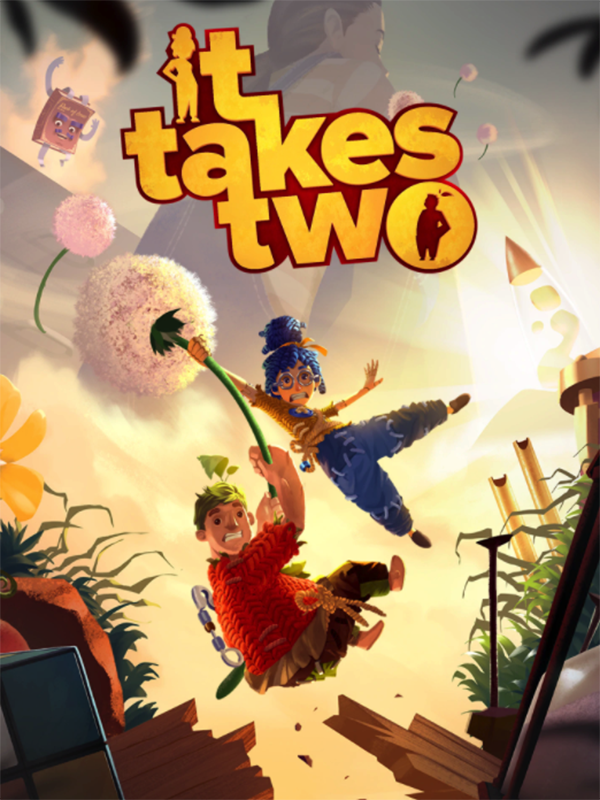

My Favorite Game Reviews:
It Takes Two

It Takes Two is a co-op adventure game where two players control Cody and May, a couple turned into dolls, as they navigate a magical world to fix their broken relationship.
Each level introduces unique mechanics that require teamwork and coordination to solve puzzles and defeat enemies. The game focuses on creativity, communication, and emotional storytelling,
offering a fun and meaningful experience for players. With its diverse environments, engaging puzzles, and heartfelt narrative, It Takes Two is a standout choice for those looking for a cooperative challenge.
My boyfriend and I play this alot and we absolutely love it!
Lethal Company

Lethal Company is an intense co-op horror experience where you and your team must navigate abandoned industrial facilities, evade terrifying entities, and gather valuable scrap
to meet the ruthless quotas of a mysterious corporation. With every mission, the tension rises as dynamic scares, strategic teamwork, and high-risk exploration push your survival
instincts to the limit. Will you escape with your haul, or become another victim of the horrors lurking in the shadows?
This game is super fun even if you aren't the biggest fan of scary games.
Minecraft / Modded Minecraft
Minecraft truly stands out as the best sandbox survival game and gives players complete freedom when it comes to exploring, building, and simply surviving in a dynamic world.
The game is as entertaining as it sounds, whether you are in the middle of mining for diamonds, constructing structures, or even battling creepers. Modded Minecraft takes the adventure
even further by implementing new insane features such as new civilizations, very advanced technology, and even magic systems. It is an amazing game for strategy lovers, as well as all other
Minecraft players, because of its astonishing personalization options and its massive community.
It goes with out saying but everyone loves minecraft I prefer modded Minecraft over vanilla Minecraft. Regardless it is fun for everyone!
Stardew Valley

Stardew Valley is a beloved indie farming simulation game where you inherit an overgrown farm from your grandfather. You are tasked with turning the farm into a thriving business while balancing your life
in the small town of Pelican Town. The game offers a variety of activities, such as growing crops, raising animals, fishing, and mining. The game is also filled with charming characters and allows you to build
relationships with the townspeople. It's not just about farming—there are seasonal festivals, quests, and even mysteries to solve. What makes Stardew Valley stand out is its relaxed pace, making it ideal for players
who enjoy casual and immersive experiences.
This is a fun game to just relax and play.
Among Us

Among Us is a multiplayer social deduction game that became wildly popular for its fun and unpredictable gameplay. Set in space, players work together on a spaceship to complete tasks, but one or more players
are secretly Impostors trying to sabotage the mission and eliminate the crew without being caught. Players must work together to identify the Impostors through discussions, voting, and observation. The catch?
The Impostors are skilled at deceiving others, and they can sabotage the ship to create chaos. Among Us encourages communication, strategy, and a little bit of deception, making it an exciting game for socializing
and testing your trust in others.
It's a perfect party game for a group of friends.